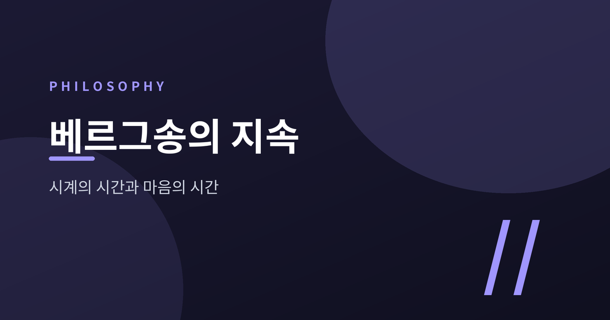
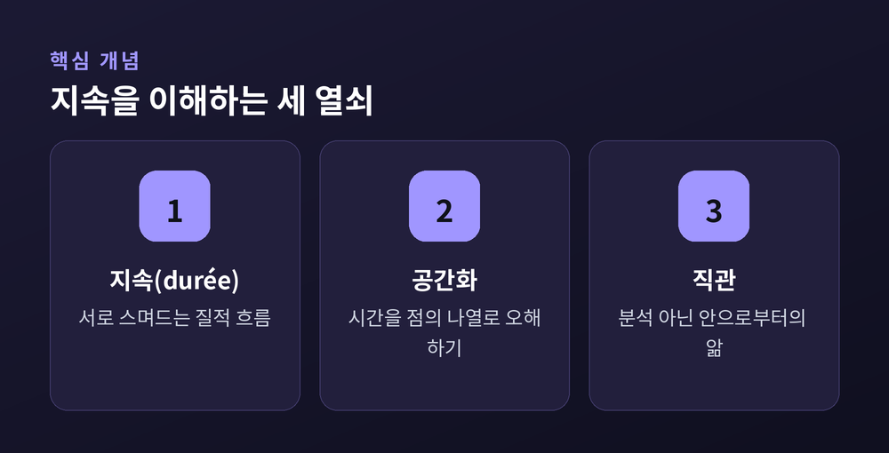
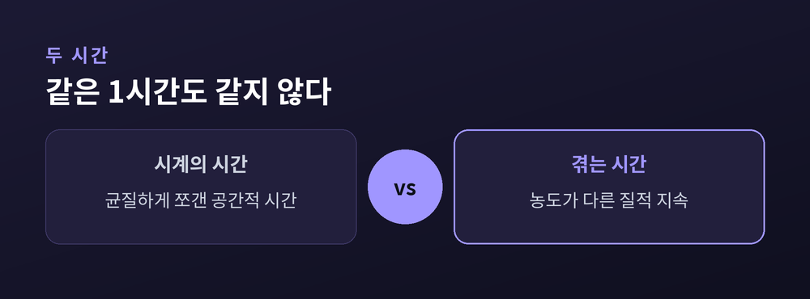
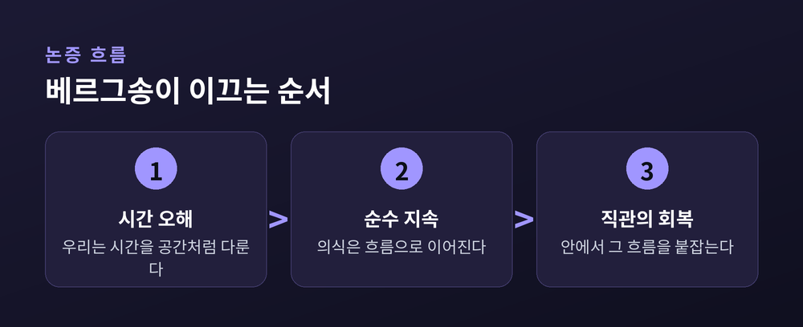
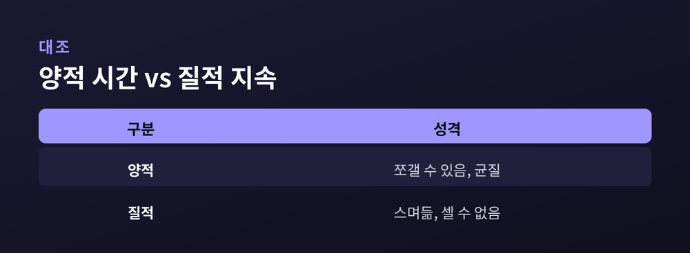

오늘은 프랑스 철학자 앙리 베르그송의 핵심 개념, 지속(durée)에 대해 이야기해 보려 합니다. 시계가 재는 시간과 우리가 실제로 겪는 시간은 같은 것일까요. 베르그송은 이 둘이 전혀 다르다고 말합니다.
베르그송의 첫 저작은 칸트 비판에서 출발합니다. 그는 칸트가 시간과 공간을 뒤섞어 놓았다고 봅니다. 그 결과 인간의 행위는 자연 인과에 종속된 것처럼 그려지고 맙니다.
베르그송의 대응은 간단합니다. 시간과 공간을 다시 나누는 것입니다. 이 구분을 통해 그는 의식에 직접 주어진 것이 바로 지속이라고 정의합니다. 지속 안에는 사건들의 나열이 없습니다. 나열이 없으니 기계적 인과도 없습니다. 자유를 말할 수 있는 자리는 오직 이 지속뿐이라는 것이 그의 논지입니다.
시간론과 자유의지 문제는 그에게 하나의 문제였던 셈입니다.

베르그송은 지성(知性)이 본질적으로 분석적이고 실용적인 도구라고 말합니다. 지성은 사물을 뚜렷하고 측정 가능한 부분으로 쪼갭니다. 그래야 우리가 환경을 다루고 조작할 수 있기 때문입니다.
문제는 이 방식이 삶 자체를, 그 지속을 놓친다는 데 있습니다.
베르그송은 양떼를 세는 상황을 예로 듭니다. 양을 셀 때 우리는 초원이 아름답다는 사실이나, 양들이 서로 완전히 같지 않다는 사실을 무시합니다. 오직 공통적으로 셀 수 있는 것에만 주목합니다. 각 양이 공간 안에서 구별된 자리를 차지하기 때문에, 서로 나란히 놓고 셀 수 있는 것입니다.
시계와 달력도 마찬가지입니다. 초침이 움직이는 눈금, 하루하루 넘어가는 날짜는 균질하게 쪼갠 공간의 형식입니다. 시계가 재는 시간은 사실 시간이 아니라 공간화된 시간입니다. 이미 점들의 나열로 바뀐 것입니다. 베르그송이 볼 때 진짜 지속은 이렇게 나눌 수 있는 점들의 계열이 아닙니다.
베르그송은 지속을 질적 다양성이라 부릅니다. 양적 다양성과 대비되는 개념입니다.
양적 다양성은 사물이나 의식 상태를 균질한 공간 속에서 서로 떼어 놓음으로써 헤아리는 방식입니다. 반면 질적 다양성은 여러 의식 상태가 하나의 전체로 조직되고, 서로 스며들며, 점점 더 풍부해지는 것을 말합니다. 베르그송은 여기서 "여럿"이라는 단어조차 부적절하다고까지 말합니다. 그 말 자체가 이미 숫자 세기를 함축하기 때문입니다.
그는 지속을 설명하려 세 가지 이미지를 듭니다.
첫째는 두 개의 얼레와 그 사이를 오가는 테이프입니다. 나이 들수록 미래는 줄고 과거는 늘어나는 모습과 닮았습니다. 다만 테이프가 균질하다는 점에서는 한계가 있습니다. 베르그송은 의식적 존재에게 두 순간은 결코 동일하지 않다고 못박습니다.
둘째는 색채의 스펙트럼입니다. 이질적인 색조는 잘 보여주지만, 색들이 나란히 놓여 있다는 점에서 연속성을 놓칩니다.
셋째는 늘어나는 고무줄입니다. 수학적인 한 점으로 수축시켰다가 다시 늘이는 이미지입니다. 여기서 중요한 것은 그려진 선이 아니라, 그리는 행위 그 자체입니다. 이 행위는 연속적이고 이질적일 뿐 아니라, 나눌 수 없습니다. 공간 위에 그려진 선에는 얼마든지 구획을 넣을 수 있지만, 움직임 자체는 나뉘지 않습니다.

이 개념을 가장 구체적으로 느끼게 해주는 것이 베르그송의 멜로디 비유입니다.
그는 한 곡조를 회상할 때, 음표들이 서로 녹아들며 과거와 현재를 하나의 유기적 전체로 만든다고 말합니다. 음표들이 잇달아 나온다 해도, 우리는 그것들을 서로 안에서 지각합니다. 순수 지속은 뚜렷한 윤곽 없이 서로 스며드는 질적 변화의 연속일 뿐이라는 것입니다. 마치 몸을 맡기고 흔들리며 듣는 곡조의 잇단 음표들처럼 말입니다.
음악을 들을 때 우리는 방금 지나간 음을 따로 떼어 기억하지 않습니다. 그 음은 지금 울리는 음 속에 이미 스며들어 있습니다. 멜로디는 음표들의 합이 아니라 하나의 흐름입니다. 베르그송에게 의식도 이와 같습니다.
또 하나의 유명한 비유는 『창조적 진화』에 나옵니다. 설탕물 한 잔을 만들려면, 설탕이 녹을 때까지 기다려야 합니다. 좋든 싫든 말입니다.
베르그송은 이 작은 사실이 큰 의미를 담고 있다고 말합니다. 여기서 내가 기다려야 하는 시간은 물질계 전체 역사에 똑같이 적용될 수학적 시간이 아니기 때문입니다. 그것은 더 이상 사유된 것이 아니라 겪어진 것입니다. 더 이상 관계가 아니라 절대입니다.
설탕이 녹는 데 걸리는 시간은 시계로도 잴 수 있습니다. 하지만 그 기다림, 조바심의 밀도는 시계 눈금처럼 늘리거나 줄일 수 없습니다. 같은 1시간도 설레며 기다리는 1시간과 지루하게 흘려보내는 1시간은 시계 위에서는 같지만, 지속 안에서는 전혀 다른 밀도를 가집니다.
"같은 1시간도 같지 않다." 베르그송이 우리에게 남긴 메시지는 결국 이 한 문장으로 압축될 수 있습니다.
그렇다면 지속은 어떻게 알 수 있을까요. 지성으로는 부족합니다. 지성은 분석하고 쪼개는 도구이기 때문입니다.
베르그송은 직관을 공감으로 정의합니다. 직관은 사물을 쪼개어 상징으로 대체하는 대신, 사물 안으로 들어가는 방식으로 압니다. 그에게 이는 결국 자기 자신 안으로 들어가는 일이기도 합니다. 우리가 가장 직접적으로 직관할 수 있는 것이 바로 자신의 지속이기 때문입니다.
지속의 직관은 우리를 하나의 연속성과 접촉하게 합니다. 그 연속성은 우리가 결코 전체로 상상하거나 개념화할 수 없는 것입니다. 그러니 직관이 단번에 절대적 지식을 주는 것은 아닙니다. 직관은 지속의 이질성을 실제로 살아내는 하나의 경험에 가깝습니다.
여기서 한 가지는 솔직히 인정해야 합니다. 직관이 정확히 방법인지, 아니면 그 자체로 하나의 경험인지는 베르그송 해석에서도 뚜렷하게 갈립니다. 개념 자체가 손에 잘 잡히지 않는다는 것, 이것이 이 철학의 매력이자 동시에 한계입니다.
베르그송은 후기 저작 『창조적 진화』에서 이 논의를 생명 전체로 확장합니다. 그는 모든 생명체를 관통하는 근원적 공통 충동이 있어야 한다고 봅니다. 이것이 그 유명한 엘랑 비탈, 생명의 도약입니다.
그는 기계론과 목적론 양쪽을 모두 비판합니다. 기계론은 모든 변화가 이전 상태에 이미 담겨 있다고 보아 진정한 창조를 불가능하게 만듭니다. 전통적 목적론 역시 전체가 이미 주어져 있다고 전제하는 점에서 마찬가지입니다. 베르그송이 제시하는 대안은, 목적이 있다면 그것은 끝이 아니라 기원에 있어야 한다는 것입니다.
진화를 이끄는 두 갈래는 본능과 지성입니다. 인간의 지식은 지성에서 비롯됩니다. 그러나 지성만으로는 지속 속의 생명에 다다를 수 없습니다. 다행히 지성의 주변부에는 본능의 잔여가 남아 있습니다. 이 잔여가 우리를 근원적 생명의 충동과 부분적으로 합치시킵니다. 이것이 바로 직관의 토대입니다.
예전의 철학은 삶을 완성된 설계도로 그리려 했습니다. 베르그송은 삶을 지금도 그려지고 있는 선으로 봅니다.


정리하면 이렇습니다. 시계는 시간을 균질한 점들로 쪼개어 보여줍니다. 그러나 우리가 실제로 겪는 시간은 스며들고 뒤섞이는 흐름입니다. 멜로디를 들을 때, 설탕이 녹기를 기다릴 때 우리는 이 흐름을 몸으로 느낍니다.
"시계는 시간을 재지만, 삶은 시간을 겪는다." 베르그송이 남긴 이 구분은 백 년이 지난 지금도 낡지 않았습니다.
오늘 하루, 유난히 길게 느껴졌거나 순식간에 지나가 버린 순간이 있었느냐고 묻는다면, 아마 대부분 그렇다고 답하실 것입니다. 그 어긋남이야말로 지속이 존재한다는 가장 가까운 증거일지 모릅니다.